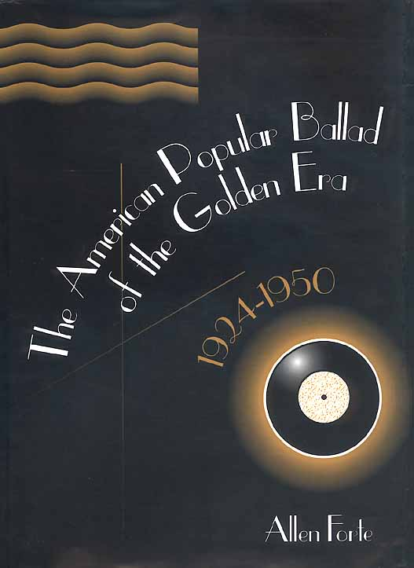

|  |
“In this pathbreaking book, Allen Forte uses modern analytical procedures to explore the large repertoire of beautiful love songs written during the heyday of American musical theater, the Big Bands, and Tin Pan Alley. Covering the work of such songwriters as Jerome Kern, Irving Berlin, Cole Porter, George Gershwin, Richard Rodgers, and Harold Arlen, he seeks to illuminate this extraordinary music indegenous to America by revealing its deeper organizational characteristics. In so doing, he aims to establish it as a unique corpus of music that deserves more intensive study and appreciation by scholars and connoisseurs in the broader fields of American popular music and jazz.” |
|